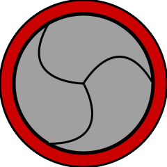
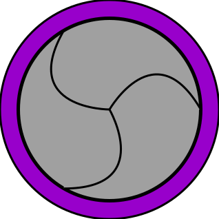

Midnight on Proxima
As a personal project, I am currently leading a group of other RIT students in creating a multiplayer VR game in Unity.
My Contributions
- Leadership & Planning: as the person who began the project I have taken the initiative in coordinating and planning meetings and project goals.
- Concept Art & Narrative Design: I've contributed to the creation of concept art and narrative elements that have guided our design efforts.
- Player SystemsI have researched VR design and created a player rig in Unity, including full-body IK and animated hands.
This project has provided me with the opportunity to learn about the Unity XR Interaction Toolkit and how to approach the nuanced design challenges of the VR platform.
Setting up the full-body rig has allowed me to learn about procedural animation. Since traditional animations won’t be able to closely match the movements of a player in VR I had to learn new ways to define the movements of the player model.
Above is the player rig I created for the game. It uses procedural animation and IK to position the limbs based on the positions of the player’s headset and controllers.
In addition, leading a development team outside the context of an academic project has given me experience in balancing the schedules of several full-time students against a time commitment to the project. In setting our own deadlines and defining our own goals we have gone beyond the basic experience of being handed a rubric and a deadline to meet design goals.
Future Work and Challenges
Because this project is still in its early stages, there is a lot of work yet to come. Our group plans to make several maps, as well as several unique enemies. One of the focuses of the game will be resource collection, which means we will have to put a lot of work into items and the puzzles that guard them.
One significant challenge We expect in the future is online integration. As I stated earlier, this is intended to be a multiplayer game, we will have to do a lot of research into how multiplayer games are made and how they remain stable. This will be a significant concern for our team because the VR platform requires a greater level of optimization compared to other games.
Spinner Scorge
I was tasked with creating my own version of a classic top-down shoot 'em-up game in Unity. The game I created was Spinner Scorge, the base concept for which was “What if we give Beyblades guns?” So I set out to introduce the chaotic interactions of clashing spinners to the SHMUP genre.
Game Mechanics
Just like dueling with Beybldes, stop spinning and you’re out. Angular velocity is key–it’s your health. Collisions chip away at it, and spinners with guns can shoot to slow rivals down. Replenishing your spinner's speed requires defeating enemies or surviving waves.
The goal of the game is simple: rack up the highest score possible. When your spinner stops spinning, it's game over, but every new attempt is a chance to outdo yourself. Your score climbs with each enemy downed, and tougher foes offer bigger bounties. Enemies will appear randomly each round, escalating in number and challenge per round. Completing a round means clearing all enemies, immediately triggering the next round, and spawning new enemies.
I pushed this game beyond traditional SHMUP constraints by implementing a physics system for authentic top-like spinner interactions. Without relying on Unity’s default rigid body collision system, I created my own custom-coded forces and collision detection to allow spinners to push and crash into each other.

Wham! The spinners collide and are sent flying across the map. This chaotic motion was achieved using my own custom script.
Commonly, in a SHMUP the player shoots enemies inside a fixed area or perpetually scrolls in one direction. However, in order to evoke the chaotic energy of a Beyblade duel my game allows limitless movement across an endless map; the player can go anywhere and the enemies can come from any direction. From there, the game follows the player, moving the background and spawning enemies nearby.
Enemy Types
-

Standard Enemy Seeks out the player and ram into them. Though small and slightly slower than the player, they are the most plentiful of the enemies and can easily overwhelm them.
-

Shooter Enemy Follows the player and shoots bullets radially. These enemies are more rare than the standard and present a larger threat.
-
Fast Enemy - These enemies are fast, small, and pack a massive punch. They can quickly shred a player's health bar. These enemies are very rare and present a significant threat.
Challenges Faced
Navigating Unity's component-based architecture was my initial hurdle, leading to early code entanglements. Over time, I managed to decouple the components I created for standalone functionality and rethink my approach to the game architecture. Although some interdependencies still remain, at the end of the project the code is now well- structured and much cleaner.
Coding the collisions in the game was a very complex puzzle; My first attempt involved trying to rearrange physics equations to solve for exact numbers. This task proved to be too complex for the time allowed and caused significant lag in-game. Consulting with a physics-savvy friend led to a pragmatic approach—approximating collisions rather than exact calculations. This decision balanced performance with playability, a key takeaway being that perfect accuracy isn't always necessary for enjoyable gameplay.
Reflections and Future Improvements
Overall, I'm satisfied with the project outcome. If I were to revisit it, I'd delve deeper into existing rigid body collision algorithms for potential enhancements.
Future updates might include adding terrain and obstacles for dynamic gameplay—elements currently absent due to the limitations of my collision handling. Introducing these would not only elevate the action but also more closely mirror the ricocheting chaos of Beyblade duels.
ZOMBIES!
As an academic project, I created a web-based hoard shooter using JavaScript as well as several external libraries including PixiJS, VictorJS, and Howl.
This project was an excellent opportunity to familiarize myself with JavaScript Classes, which I used to define zombies, survivors, bullets, and the player. I also got the chance to experiment with external JavaScript libraries and build on my ability to integrate several different tools into one project. In addition, I was able to build off of the physics-based Autonomous agents I developed for Spinner Scourge, another project I was working on concurrently.
Reflections and Future Improvements
In the future, there are several things I would like to add to this project. The gameplay loop for this game is very simple and doesn’t allow for a lot of emergent gameplay so the first thing would be more upgrades. I think the game could benefit greatly from an upgrade that decreases respawn time or one that improves weapon damage. In addition, I would probably add new enemies like faster or stronger zombie variants. It would also be interesting to allow the player to buy and set up defenses that hinder or slow the zombies’ movements.
SHOTGUNBOOMERANG
I worked collaboratively on a side-scrolling run-and-gun platformer using MonoGame. The project emphasized the importance of team coordination and throughout it, I was able to hone my programming and debugging skills.
My Contributions
- Physics System: Developed a robust physics system using axis-aligned bounding boxes for collision detection, crucial for the game's physics interactions.
- Player Systems: Enhanced the player class using a finite state machine to manage user inputs and player states, regularly refining this system to adapt to gameplay needs.
- Debug Mode: Implemented a debug mode to visualize system elements like hitboxes and physics properties, aiding in efficient debugging as the project complexity increased.
- Level Editor: Created a level editor tool using Windows Forms, enabling level design through a user-friendly interface. Integrated this into the game using file I/O to convert designs into playable levels.
Debug Mode in action; Hitboxes are highlited, the shotgun's effective radius is drawn, along with it's curent spread, and In the top-left corner various useful statistics are displayed.
Challenges Faced
During development, we encountered a significant physics bug that compromised gameplay by occasionally stopping the player in their tracks. Originally, our collision resolution had to prioritize the horizontal or vertical axis, either approach would just cause problems on the other axis. By re-evaluating the problem, I came up with a solution prioritizing collision resolution based on the largest intersection area, regardless of the axis. This holistic approach not only fixed the bug but also enhanced the overall fluidity of game movements.
The level editor initially had significant performance issues, specifically when moving the viewport or creating large levels. By minimizing the number of picture boxes used to display tiles I was able to significantly reduce computational overhead and improve the responsiveness of the editor, facilitating a smoother level design process and allowing for larger levels to be made.

In the current build, scrolling around the level is quick and easy. This was not always the case, before I fixed the issue moving from one part of the level to the other could take more than a minute, and initializing a level could take more then ten.
Initially, our gameplay loop included an ambitious mix of elements ranging from puzzles to boss fights. However, this complexity began to dilute the core gameplay experience and stretch out development time. Recognizing this, the team and I reassessed our project scope, ultimately streamlining our objectives to focus on the most impactful features and eliminate feature creep. This strategic pivot not only reduced our workload but also ensured a more cohesive and engaging player experience.
Reflections and Future Improvements
In retrospect, the project would have benefited significantly from more robust and realistic planning. Clear, well-defined goals from the onset would have streamlined production, reducing the time spent oscillating between ideas. This focused approach could have accelerated development and allowed for the integration of additional stretch goals.
With increased experience, I recognize the need for improved system designs to reduce coupling and enhance information management. Specifically, the collision detection system would be redesigned. Rather than individual objects managing collision internally, a centralized collision manager class would oversee collision detection. This system would uniformly handle collisions across all object types, improving efficiency and scalability.
Basement_Green
I embarked on this project to hone my level and environment design skills and tackle unique challenges within a VR context, using the Source 2 engine. My objective was to create an immersive VR environment by applying the skills I had developed through online tutorials and various exercises with Valve’s development tools.
Goals
- Test and enhance my VR design skills.
- Deepen my knowledge of the Source 2 engine.
- Develop a fully detailed and immersive VR level using Half-Life: Alyx’s Hammer Editor.
The Challenge
I initiated the project by selecting a simple photograph of an abandoned basement as my reference. The challenge was to recreate this image as accurately as possible in VR, while also extrapolating unseen areas to complete the environment. The level design included three main areas:
- The Basement: Directly modeled from the photograph.
- The Stairwell: Creatively imagined as an area overtaken by alien flora to connect the basement to the upper floor.
- The Upper Floor: Designed to contrast with the basement, featuring a brighter, cleaner look with windows and a skylight.
On top is the original image I referenced for the project and below is the closest equivalent viewpoint from the VR environment. The overall structure of the building is the same, but the lighting in the VR scene is much more dramatic.
The basement was a build-to-spec challenge, so to speak, as it allowed me to test my ability to design environments based on a predetermined model. The stairwell served as a more creative exercise, where I tried my hand at more organic and chaotic environments. Finally, I got to the upstairs, where I decided to juxtapose the dark, dilapidated basement with a well-lit clean interior in order to practice my ability to create contrast between connected spaces.
Neither the upstairs (top) nor the stairwell (bottom) are visible in the original image, so the designs had to be thought up on the fly. I think these do a good job of encapsulating the range of different environments that can be created in Half-Life: Alyx.
had to tackle some common VR challenges as well, such as motion sickness due to uneven terrain. For this, I implemented an invisible, flat floor over the bumpy basement surface, preserving aesthetics while enhancing user comfort.
Learning Outcomes
This project was a practical application of "learning by doing," pushing me to solve unforeseen problems and experiment with new techniques, such as the 3D skybox system for realistic backgrounds. The experience improved my proficiency in environment design and VR-specific challenges, like player movement and scene lighting.
Reflections and Future Improvements
While the project was largely exploratory and adaptive, more structured planning would benefit future projects with specific goals beyond learning. For similar future projects, I would prepare detailed floor plans and focus more on game mechanics from the outset. Overall, the project successfully met its goals, creating a detailed, compact VR environment that leverages the strengths of VR gameplay.